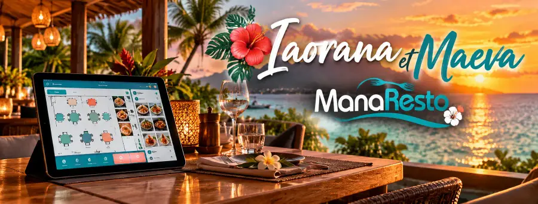

Toute la gestion de votre restaurant dans une seule application
Caisse, salle, cuisine, stocks et commandes en ligne : simplifiez votre service avec une solution conçue à Tahiti.
12 000 F CFP/mois
Abonnement avec engagement de 12 mois · programme de base, options à la carte
0 % de commission15 jours gratuitsSans carte bancaire
Démo : un restaurant exemple, ouvert tout de suite. Essai : votre propre restaurant, pendant 15 jours.
Vous préférez être accompagné ? Demander une démonstration (rendez-vous de présentation avec notre équipe)
Un vrai service, de la table à l'encaissement
Filmé dans le restaurant exemple, sans montage : c'est exactement ce que vous trouverez dans la démo.
- La table s'ouvresur le plan de salle, en deux touches.
- La commande est priseavec les photos des plats.
- La cuisine la reçoitaussitôt, sur son écran.
- On encaissepar carte ou en espèces, et la table se libère.
L'essentiel de votre service, au même endroit
Le programme de base couvre la salle, la caisse et la cuisine. Ajoutez seulement les options dont vous avez besoin.
Caisse et encaissement Inclus
Espèces, carte, addition partagée, tickets et clôture de caisse.
Plan de salle et suivi des tables Inclus
L'état de chaque table en temps réel, ou la vente au comptoir.
Écran cuisine Inclus
Les commandes arrivent en cuisine, sur écran ou en bons imprimés.
Réservations Inclus
Prises par téléphone, liste du jour et calendrier.
Commande en ligne et QR code Option
À emporter ou en livraison, 0 % de commission.
Stocks, équipe, statistiques Options
Recettes et inventaires, plannings et pointage, chiffres détaillés.
Évitez les tables oubliées, même en plein service.
ManaResto suit chaque table pendant le repas et affiche à l'équipe, dans le panneau « À faire maintenant », ce qu'il faut faire ensuite, du plus urgent au moins urgent.
- Prise de commandePeu après l'installation, un rappel invite à accueillir la table et à proposer les boissons, puis à prendre la commande des plats.
- Plat prêtDès que la cuisine marque une commande prête, la table passe « À apporter » en tête de liste.
- Dessert et caféAprès un passage pour vérifier que tout va bien, ManaResto rappelle de proposer le dessert et le café.
- AdditionAprès le dessert, un rappel invite à proposer l'addition.
Un rappel non traité passe « en retard ». Les délais se règlent dans les paramètres, avec son ou vibration au choix, pour le serveur de la table ou pour toute l'équipe.
Vos commandes en ligne, sans commission.
Vos clients commandent directement auprès de votre établissement, depuis votre page ou le QR code à table, et vous gardez la totalité du montant.
0 %de commission
- commande à emporter, et livraison si vous la proposez (communes, frais et minimum de commande) ;
- QR code à table : menu et commande depuis le téléphone ;
- menu en français et en anglais, et en partie en reo tahiti ;
- paiement sur place au retrait ou à la livraison ;
- les commandes arrivent directement dans ManaResto.
Les écrans ManaResto, tels qu'ils sont.
Des captures réelles du logiciel. Touchez un écran pour l'agrandir.
Pensé à Tahiti pour les professionnels du fenua
ManaResto a été conçu pour les restaurants, roulottes, snacks et bars de Polynésie française.
Prix en F CFP
Tickets, rapports et exports en francs Pacifique, sans décimales inutiles.
TVA locale lorsque applicable
Taux configurables par produit, N° Tahiti et mentions sur vos tickets.
Coupures de réseau
Avec l'option Continuité de service, la caisse continue sans Internet et se synchronise au retour du réseau.
Accompagnement local
Une équipe basée à Tahiti, joignable par e-mail.
Sans matériel imposé
Tablettes, téléphones et ordinateurs récents que vous avez déjà, sans limite d'appareils.
Une page pour votre restaurant
Avec l'option Digital : votre menu, vos horaires et des boutons pour commander et réserver.
Le matériel qui fonctionne avec ManaResto
ManaResto s'utilise dans le navigateur et peut être installé comme une application. Avant d'acheter du matériel, écrivez-nous : nous vérifions votre modèle.
Écrans
Tablette, ordinateur ou smartphone avec un navigateur récent.
Imprimantes de tickets
Epson compatibles « Server Direct Print » (par exemple TM-m30), Star compatibles « CloudPRNT » (par exemple mC-Print3, TSP143IV), imprimante réseau via un petit programme sur l'ordinateur de la caisse, ou impression par le navigateur. Papier 80 ou 58 mm.
Tiroir-caisse et carte bancaire
Le tiroir-caisse se branche sur l'imprimante de tickets et s'ouvre aux encaissements en espèces. Les paiements par carte se font sur votre terminal habituel et sont enregistrés dans la caisse.
Commencez simplement
Testez la démo
Ouvrez le restaurant exemple, sans inscription, et prenez une commande comme pendant un service.
Créez votre compte
15 jours gratuits, sans carte bancaire : ajoutez votre carte, vos tables et votre équipe.
Commencez votre service
Sur votre tablette, votre ordinateur ou votre smartphone.
Des restaurateurs du fenua en parlent
Un abonnement simple, zéro commission.
Une seule formule de base pour tous les établissements : restaurant, roulotte, snack, bar ou café. Pas de pourcentage prélevé sur vos ventes, pas de limite d'appareils ni d'utilisateurs.
Programme de base
12 000 F CFP/ mois
Abonnement avec engagement de 12 mois
- Caisse et encaissement
- Plan de salle ou comptoir
- Suivi des tables
- Écran cuisine et bons imprimés
- Réservations par téléphone
- Tickets, clôture et rapports du jour
- 0 % de commission
- Appareils et utilisateurs sans limite
- Mises à jour incluses
- Support par e-mail
Ce que les restaurateurs nous demandent
Combien coûte ManaResto ?
Le programme de base coûte 12 000 F CFP par mois, avec un abonnement à engagement de 12 mois. Les options (stocks, équipe, commande en ligne, mode hors ligne…) s'ajoutent à la carte ; leur prix est communiqué sur demande.
Que comprend le programme de base ?
La caisse et l'encaissement (espèces, carte, addition partagée), le plan de salle ou la vente au comptoir avec le suivi des tables, l'écran cuisine et les bons imprimés, les réservations prises par téléphone avec la liste du jour et le calendrier, les tickets, la clôture de caisse et les rapports du jour. Sans limite d'appareils ni d'utilisateurs.
Y a-t-il une commission ou des frais de paiement ?
ManaResto ne prélève aucune commission sur vos ventes ni sur vos commandes en ligne. Les commandes en ligne sont réglées sur place ou à la livraison. Les paiements par carte passent par votre propre terminal de paiement : ses frais dépendent de votre contrat avec votre banque et ne sont pas facturés par ManaResto.
L'installation et la formation sont-elles incluses ?
Non, elles ne sont pas comprises dans l'abonnement. Elles sont proposées en services ponctuels, facturés une seule fois : mise en place sur place, formation de l'équipe, saisie de votre carte et pack matériel. Leur prix est communiqué sur demande.
Quelles imprimantes et quel matériel sont compatibles ?
ManaResto fonctionne dans le navigateur d'une tablette, d'un ordinateur ou d'un smartphone récent. Pour les tickets : imprimantes Epson compatibles « Server Direct Print » (par exemple TM-m30), imprimantes Star compatibles « CloudPRNT » (par exemple mC-Print3 ou TSP143IV), imprimante réseau reliée par un petit programme sur l'ordinateur de la caisse, ou impression par le navigateur (sans tiroir-caisse). Papier de 80 ou 58 mm. Le tiroir-caisse se branche sur l'imprimante de tickets. Les paiements par carte se font sur votre terminal habituel et sont enregistrés dans la caisse.
ManaResto fonctionne-t-il sans Internet ?
Avec l'option Continuité de service, les tablettes continuent sans Internet : ouverture des tables, commandes, envoi en cuisine, encaissement en espèces, ouverture et clôture de caisse, connexion des employés par code PIN. Tout se synchronise au retour du réseau.
Limites : les imprimantes connectées par Internet n'impriment pas pendant la coupure (sauf avec l'agent d'impression local ou le boîtier de secours), le terminal de paiement relié à la caisse n'est pas utilisable et les écrans de gestion attendent le retour du réseau. Sans cette option, la caisse attend le retour de la connexion.
Que se passe-t-il à la fin des 15 jours d'essai ?
Aucune carte bancaire n'est demandée, donc rien n'est prélevé automatiquement. Quelques jours avant la fin, vous recevez un rappel par e-mail. Pour continuer, vous nous écrivez et nous activons votre abonnement ; vos données (carte, plan de salle, commandes) sont conservées.
Comment contacter le support ?
Par e-mail à contact@manaresto.com.
Quelle différence entre la démo et la démonstration ?
La démo interactive s'ouvre tout de suite, sans inscription : vous utilisez un restaurant exemple comme si c'était le vôtre. La démonstration est un rendez-vous de présentation avec notre équipe, sur vos propres cas.
ManaResto est-il adapté aux roulottes et aux snacks ?
Oui. ManaResto propose la vente au comptoir en plus du plan de salle, pour les restaurants, roulottes, snacks, bars et cafés.
ManaResto est-il développé en Polynésie ?
Oui. ManaResto est conçu et développé à Tahiti pour les professionnels de Polynésie française.
Demander une démonstration
Un rendez-vous de présentation avec notre équipe, sur vos propres cas : votre carte, votre salle, votre organisation. La démonstration est gratuite.
Prêt à simplifier la gestion de votre restaurant ?
Ouvrez le restaurant exemple maintenant, ou créez votre compte pour 15 jours gratuits.
12 000 F CFP/mois• engagement 12 mois • 0 % de commission
Besoin d'être accompagné ? Demander une démonstration